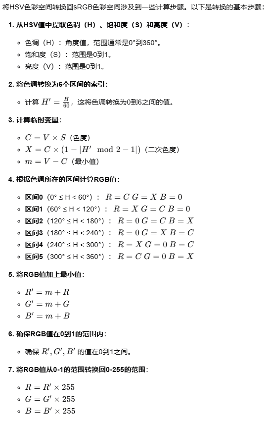
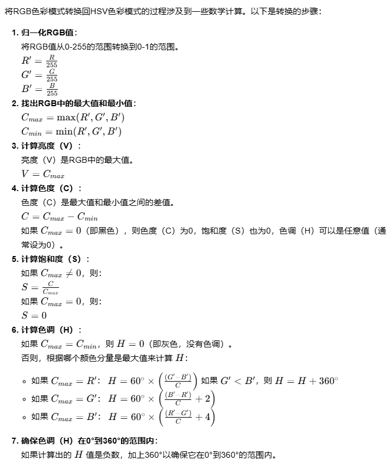

You Only Need One Color Space: An Efficient Network for Low-light Image Enhancement
痛点
sRGB与LLIE任务不符。图像的亮度和颜色与三个通道有着很强的相互依赖性，因此对颜色空间添加稍微的扰动就会导致图像的亮度及颜色发生明显变化，这就会导致最终增强图像的不稳定性。这一点也解释了为什么有些网络需要更复杂的结构和与亮度以及颜色相关的损失函数来学习由低光到正常图像的映射
HSV不够好。首先HSV由色调（H），饱和度（S），亮度（V）组成，它把颜色和亮度分开了，这肯定比sRGB更好处理图像（实际上也是通过sRGB计算来的），但是作者说由于H不连续的属性（例如RGB 255 0 0 对应的H为0，而255 0 1对应的H接近360，他们实际上是非常相近的，然而H却是两个极端，产生这种结果的原因可见下面的由HSV到sRGB的计算过程）以及HSV与sRGB之间复杂的映射关系（具体是指从HSV转回sRGB的时候如果存在亮度V=0的地方，不管H和S是什么，对应的RGB都是0 0 0，这样就会导致色调和饱和度信息丢失了，也就是论文里面说的multi-mapping of pure black planes，产生这种结果的原因可见下面的由sRGB到HSV的计算过程）导致其难以处理复杂和变化的光照条件，这也解释了为什么在极低的光照条件下用HSV增强的图像通常也会出现黑色伪影
 
解决方案
新的颜色空间HVI（Horizontal/Vertical-Intensity）：包含三个可训练参数和一个自定义训练函数
I:Intensity对应图像的亮度，具体计算跟HSV的V一样，就是RGB通道的最大值
因为HVI也要把颜色和亮度分开，所以HVI的H和V是在HSV的H和S的基础上算的，计算如下图：

其中Ck代表颜色密度（Color-Density-k），作者说低光图像的暗区的值通常很小，很难辨别颜色导致信息丢失，因此提出了第一个可训练参数k允许网络调整这些暗区的颜色点密度（不是很懂 每个区域的像素点不是固定的吗 何来的密度一说），计算如下图：

然后S就是HSV里面的S
DT就是自定义训练函数（Function-Density-T 为啥又跟密度扯上关系了）的结果，作者说是为了提高生成结果的饱和度，它基于Pr，然后长这样：

这个Pr代表颜色感知图（Color-Perceptual map），作者说不同的相机对RGB的敏感度不同，在低光场景下会导致色偏，为了减轻色偏而产生的不一样的数据，因此引入了第二个和第三个可训练参数去算这个Pr，单独从数据集的角度来说数据集的图片都用的一样，哪来的数据差异，我觉得作者可能是考虑相机感光的差异，然后是为了设计鲁棒性强的一个色彩空间而提出的这个，计算如下图，观察可以知道它是线性的，

最后的小h和小v分别是cos(2πPr)跟sin(2πPr)，观察上面的H^跟V^，他们前面的三个乘数都一样，只有后面这两不一样，所以从大体意思上理解前面三个乘数是融合并改进了原先HSV中的颜色信息生成了新的颜色信息，然后最后的小h跟小v就是把新的颜色信息映射到了水平轴（Horizontal）跟垂直轴（Vertical）上，从而形成了HVI中的H跟V
**CIDNet（Color and Intensity Decoupling Network） **：基于HVI的双路增强